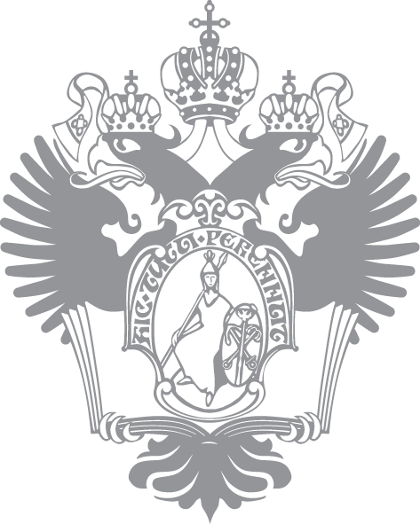
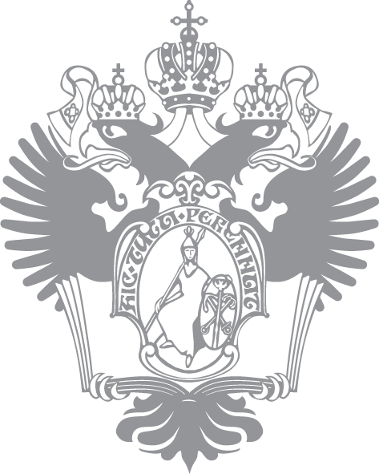

Alexander S. Kulikov
alexander.s.kulikov@gmail.com
Current Positions
 



- St. Petersburg Department of Steklov Institute of Mathematics, senior research fellow
- St. Petersburg State University, head of the educational program Modern software engineering
- JetBrains, educational projects coordinator
- Computer Science Center, board member
- Computer Science Club, head
Research Interests
- Algorithms
- Computational complexity
- CS education
Education
- M.Sc.: 2005, St. Petersburg State University
- Ph.D.: 2009, St. Petersburg Department of Steklov Institute of Mathematics, supervisor: Edward A. Hirsch
- Dr.Sci.: 2017, St. Petersburg Department of Steklov Institute of Mathematics
Publications
Complete list of publications is available at DBLP or Google Scholar. Some recent publications are listed below.- Alexander Golovnev, Alexander S. Kulikov. Circuit Depth Reductions. 2018.
- Alexander Golovnev, Alexander S. Kulikov, Alexander Logunov, Ivan Mihajlin. Collapsing Superstring Conjecture. APPROX 2018.
- Marek Cygan, Fedor V. Fomin, Alexander Golovnev, Alexander S. Kulikov, Ivan Mihajlin, Jakub Pachocki, Arkadiusz Socała. Tight Lower Bounds on Graph Embedding Problems. JACM 2017.
- Magnus Find, Alexander Golovnev, Edward A. Hirsch, Alexander S. Kulikov. A Better-than-3n Lower Bound for the Circuit Complexity of an Explicit Function. FOCS 2016.
- Alexander Golovnev, Alexander S. Kulikov, Ivan Mihajlin. Families with Infants: Speeding Up Algorithms for NP-Hard Problems Using FFT. TALG 2016.
Online Courses (MOOCs)


- Data Structure and Algorithms, six courses specialization at Coursera (370K enrolled learners)
- Introduction to Discrete Mathematics for Computer Science, five courses specialization at Coursea (74K enrolled learners)
- Algorithms and Data Structures, eight courses MicroMasters program at edX (113K enrolled learners)
- Algorithms: Theory and Practice. Toolbox, course at Stepic (in Russian, 62K enrolled learners)
- Algorithms: Theory and Practice. Data Structures, course at Stepic (in Russian, 17K enrolled learners)
Books

- Alexander S. Kulikov, Pavel Pevzner. Learning Algorithms Through Programming and Puzzle Solving. 2018.
- Translation into Russian: Sanjoy Dasgupta, Christos Papadimitriou, Umesh Vazirani. Algorithms. McGraw-Hill. 2006. Editor: Alexander Shen. Printed version: Printed version. MCCME. 2014. Draft electronic version: PDF, PDF with hyperlinks.
Invited Talks
- 32nd Conference of the European Chapter on Combinatorial Optimization (ECCO 2019)
- 13th International Computer Science Symposium in Russia (CSR 2018)
- Design, Automation and Test in Europe Conference (DATE 2018)
- Bioinformatics Summer School, 2017
Committees
- Program committees: ICALP 2019, CSR 2016, CPM 2014 (co-chair), CSR 2013, RECOMB-AB 2012.
- Organizing committee chair: RAA 2018, RAA 2017, CSR 2016, SEA 2016, RECOMB-AB 2012, CSR 2011, SSCT 2009.
- Steering committee: CSR.
Awards
- Scopus Award Russia by Elsevier, 2015
- Euler Award by St. Petersburg Scientific Center of the Russian Academy of Sciences, 2012